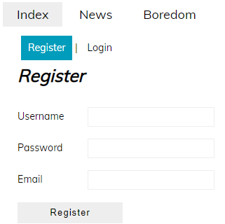
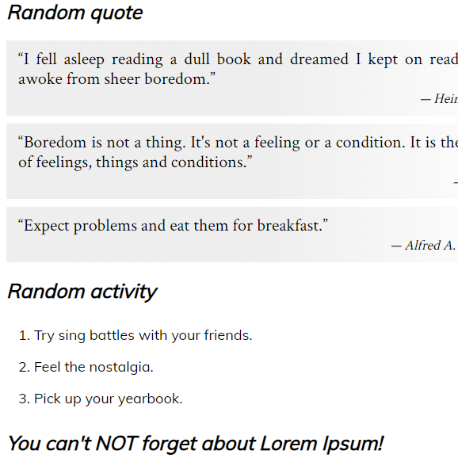
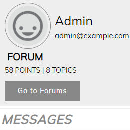
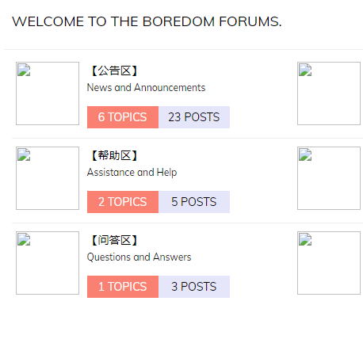
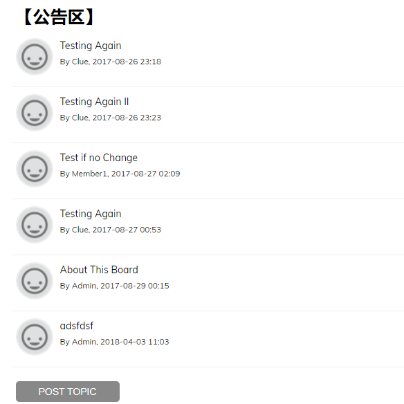
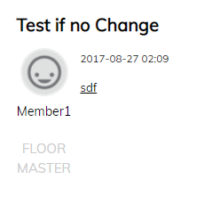
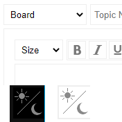
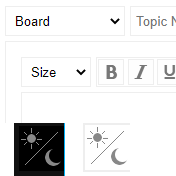
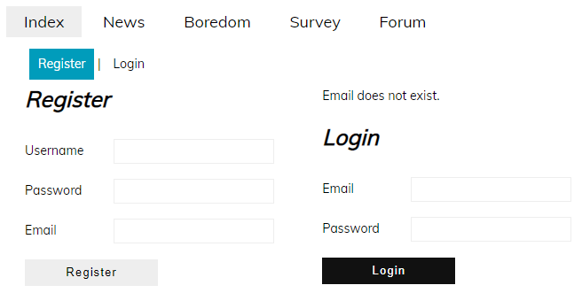

|






 


|

Header and register/login form
The header's left shows the links the user can navigate across the website. When the user hovers over a link, the link will be highlighted in a gray background. The website's 'index' and 'forum' links exist, currently. The header's right shows the 'register' and 'login' links. Hovering the link will show a white text on teal background. When the user is logged in, the two links are replaced with 'account' and 'logout'. When the user is on the register page, they can fill out the username, password, and email fields. Clicking on the button will add the user to the database. The login page above currently shows an error message saying the email entered does not exist in the website. The button is black when the user hovers over it. |